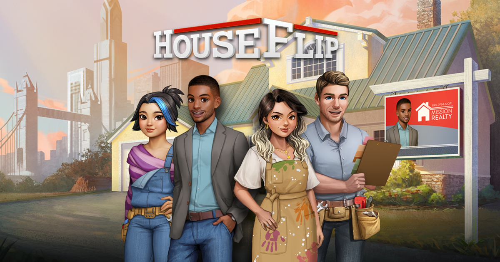
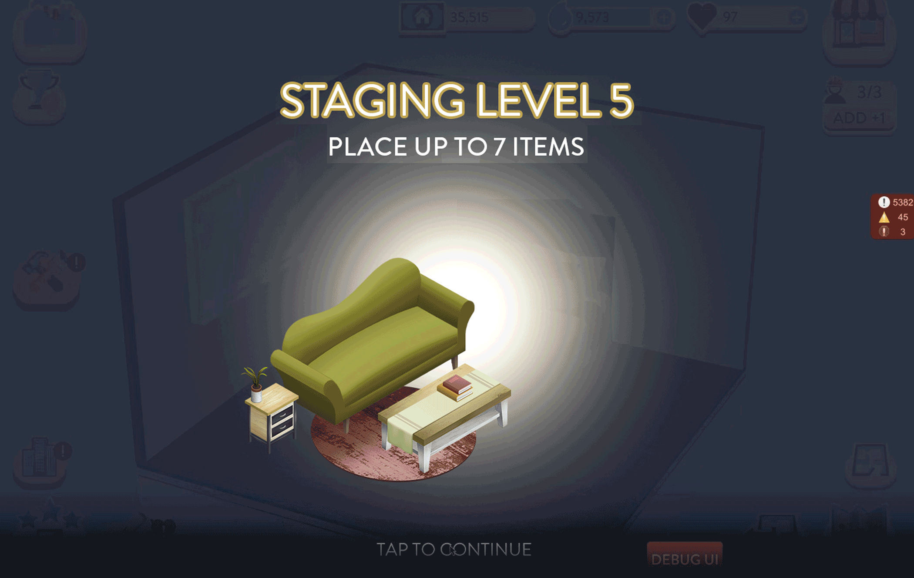
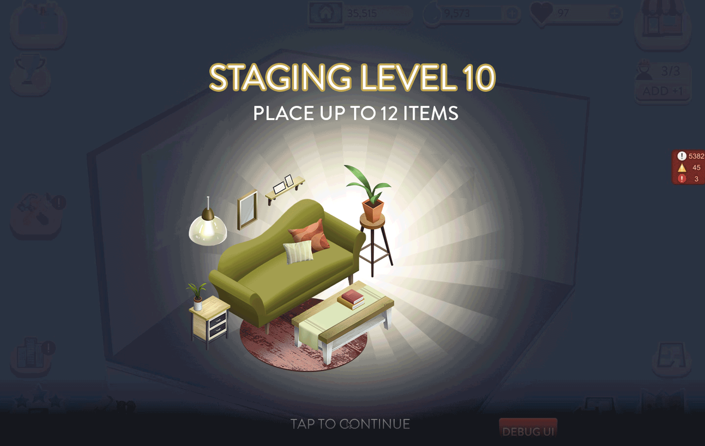

House Flip
Game UI & Promotional Design
A collection of visual design and in-game UI work for House Flip, a home-renovation game.

Context
House Flip is a home-renovation game where players update homes, decorate rooms, and progress through interactive challenges.
Insight
Progress, rewards, and customization options need to feel clear and satisfying so players can focus on the fun of transforming each home.
Concept
Create approachable, playful interface elements that make renovation choices easy to understand and give each milestone a sense of accomplishment.
Audience
House Flip's audience is primarily moms looking for a relaxing, creative escape. Easy-to-follow goals, satisfying home makeovers, and rewarding progress make it welcoming for a quick break or a longer play session.
Promotional Design
These designs celebrate players' milestones as they unlock new cities, announce collaborations with major brands like Walmart, and highlight what makes House Flip unique.


.png)
Game UI & Art
For the live-service mobile game House Flip, I designed in-game interfaces and visual assets that make its renovation and progression systems feel clear and rewarding. From staging level-ups and login bonuses to room-type banners and material cards, each element supports intuitive gameplay while keeping the experience playful and cohesive.

.png)






Programs Used
Adobe Photoshop, Illustrator, Figma, and Unity